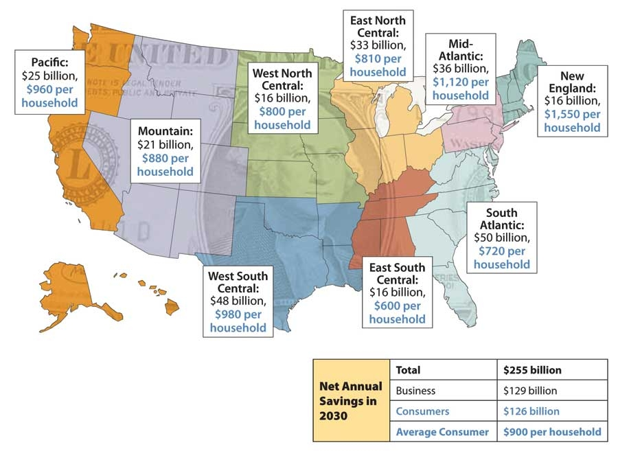

Reducing oil dependence. Strengthening energy security. Creating jobs. Tackling global warming. Addressing air pollution. Improving our health. The United States has many reasons to make the transition to a clean energy economy.
A new report from the nonprofit Union of Concerned Scientists (UCS), Climate 2030: A National Blueprint for a Clean Energy Economy, outlines a comprehensive set of renewable energy and energy-efficient policies that would produce a 56 percent drop in heat-trapping greenhouse gas emissions from 2005 levels by 2030.
The report estimates that we can achieve these deep cuts in carbon emissions while saving consumers and businesses billions. The policies outlined are designed to stimulate significant investment in clean energy technologies and other measures by 2030. UCS predicts that the resulting savings on energy bills from reductions in electricity and fuel use will more than offset the costs of these additional investments, bringing a net annual savings of $255 billion by 2030 for households, vehicle owners, businesses and industries.
According to the report, every region of the country will share in the savings - even coal-dependent regions (see map, above).
Learn more about the UCS Climate 2030 report.|
 UNION OF CONCERNED SCIENTISTS According to a new report from the Union of Concerned Scientists, the transition to a clean energy economy will save $255 billion annually. |
|
|